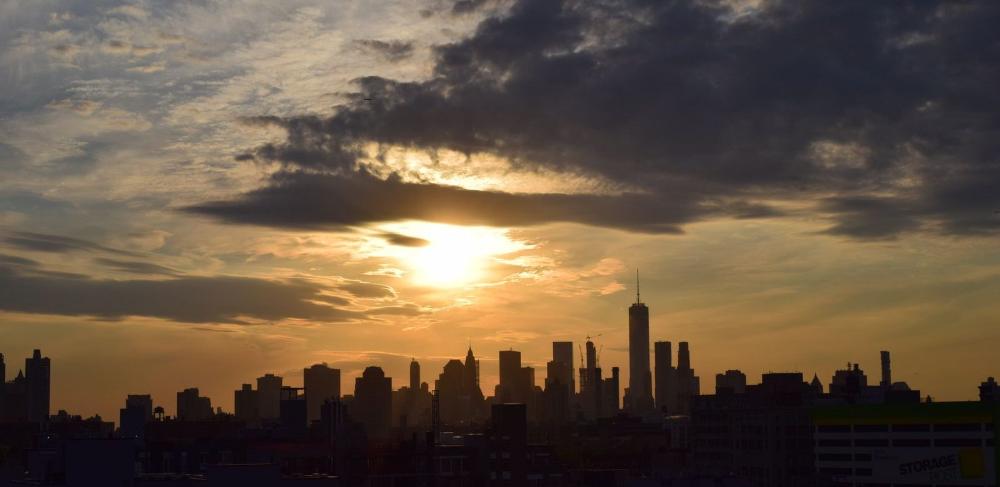

Wie zijn de Avengers?
De Avengers zijn het superheldenteam van Marvel. Hier staan alle leden op een rij, met hun echte naam en de acteur die ze speelt, plus alle Avengers-films met jaartal.

In het kort
De Avengers zijn een team van superhelden van Marvel. Ze werken ieder voor zich, maar als een gevaar te groot wordt voor één held, komen ze samen. In het Engels heten ze “Earth’s Mightiest Heroes”: de machtigste helden van de aarde.
Het team bestaat sinds 1963, bedacht door Stan Lee en Jack Kirby in het stripboek The Avengers nummer 1. In de films begon het in 2012, met zes helden.
De zes uit de eerste film
Dit zijn de Avengers die in The Avengers (2012) voor het eerst samen vechten. Wil je met het team beginnen, dan zijn dit de namen die je moet kennen.
| Held | Echte naam | Gespeeld door | Wat hij of zij kan |
|---|---|---|---|
| Iron Man | Tony Stark | Robert Downey Jr. | Uitvinder in een zelfgebouwd vliegend harnas. |
| Captain America | Steve Rogers | Chris Evans | Kreeg een serum dat hem tot topconditie bracht; vecht met een onverwoestbaar schild. |
| Hulk | Bruce Banner | Mark Ruffalo | Wetenschapper die door straling in een enorm sterk groen wezen verandert als hij boos wordt. |
| Thor | Thor van Asgard | Chris Hemsworth | Een god uit de Noordse verhalen, met een hamer die bliksem oproept. |
| Black Widow | Natasha Romanoff | Scarlett Johansson | Getrainde spion en vechter, helemaal zonder superkrachten. |
| Hawkeye | Clint Barton | Jeremy Renner | Boogschutter die nooit mist. Ook zonder krachten. |
Wie er later bij kwamen
| Held | Echte naam | Gespeeld door | Wat hij of zij kan |
|---|---|---|---|
| War Machine | James “Rhodey” Rhodes | Don Cheadle | Luchtmachtofficier in een zwaarder bewapend Iron Man-pak. |
| Scarlet Witch | Wanda Maximoff | Elizabeth Olsen | Beweegt dingen met haar gedachten en kan mensen laten zien wat er niet is. |
| Vision | Vision | Paul Bettany | Een kunstmatig wezen dat kan vliegen en door muren gaat. |
| Falcon | Sam Wilson | Anthony Mackie | Vliegt met een vleugelrugzak. Neemt later het schild van Captain America over. |
| Winter Soldier | Bucky Barnes | Sebastian Stan | De jeugdvriend van Steve Rogers, met een metalen arm. |
| Black Panther | T’Challa | Chadwick Boseman | Koning van Wakanda, met een pak van vibranium. |
| Spider-Man | Peter Parker | Tom Holland | De jongste van het stel, sinds Civil War uit 2016. |
| Doctor Strange | Stephen Strange | Benedict Cumberbatch | Chirurg die tovenaar werd en met portalen reist. |
| Captain Marvel | Carol Danvers | Brie Larson | De sterkste van allemaal; vliegt door de ruimte en schiet energie. |
| Ant-Man | Scott Lang | Paul Rudd | Krimpt tot mierformaat of groeit uit tot reus. |
| Wasp | Hope van Dyne | Evangeline Lilly | Krimpt, groeit én vliegt. |
Er zijn er nog meer geweest, want het team wisselt. Dat is met opzet: in de strips zijn er in zestig jaar tijd meer dan honderd Avengers geweest.
Wie er in de allereerste strip zaten
In The Avengers nummer 1 uit 1963 zaten vijf helden, en die lijst is anders dan die van de films:
- Thor
- Iron Man
- Ant-Man (Hank Pym)
- The Wasp (Janet van Dyne)
- The Hulk
Captain America zat er niet bij. Hij kwam er pas in nummer 4 bij, toen hij uit het ijs werd gered, en kreeg daarna alsnog de eer van oprichter. De Hulk was juist na twee nummers al weer weg.
Wie het team heeft opgericht in de films
Dat is Nick Fury (gespeeld door Samuel L. Jackson), de baas van de geheime organisatie S.H.I.E.L.D. Hij bedacht al in 1995 het “Avengers-initiatief” en riep het team in 2012 bijeen om Loki tegen te houden. Fury staat op de achtergrond; in het veld nemen Captain America en Iron Man de leiding.
Hun tegenstanders
- Loki (Tom Hiddleston): de broer van Thor, en de reden dat het team in 2012 bij elkaar komt.
- Ultron (James Spader): een computer die Tony Stark en Bruce Banner zelf gebouwd hebben, en die besluit dat de wereld beter af is zonder mensen.
- Thanos (Josh Brolin): de grote tegenstander van Infinity War en Endgame, die met één vingerknip de helft van al het leven laat verdwijnen.
- Doctor Doom (Robert Downey Jr.): de schurk van Avengers: Doomsday. Dezelfde acteur die eerder Iron Man speelde, nu aan de andere kant.
Alle Avengers-films op een rij
- The Avengers (2012)
- Avengers: Age of Ultron (2015)
- Avengers: Infinity War (2018)
- Avengers: Endgame (2019)
- Avengers: Doomsday: 16 december 2026 in de Nederlandse bioscoop (18 december in de VS)
- Avengers: Secret Wars: aangekondigd voor december 2027. Die film moet nog gemaakt worden, dus die datum kan nog schuiven.
Wil je ze op de goede volgorde kijken, en wil je weten welke andere Marvel-films je daarvoor nodig hebt? Dat staat in alle Avengers-films in de juiste volgorde.
👪 Tip voor ouders
De Avengers-films hebben allemaal een advies van 12 jaar: er wordt veel gevochten, en in Infinity War en Endgame verliezen personages die kinderen kennen het leven. Voor jongere fans zijn er tekenfilmseries zoals Avengers Assemble, en voor de kleinsten Spidey and His Amazing Friends. Kijk voor het actuele advies op Kijkwijzer.
💡 Wist je dat?
De naam Avengers komt in de films van Carol Danvers: “Avenger” was haar roepnaam bij de luchtmacht, en Nick Fury zag die naam op haar vliegtuig staan. En in Engeland heette de eerste film niet The Avengers maar Marvel Avengers Assemble, omdat daar al een oude tv-serie zo heette.
Meer over de helden zelf? Bekijk de Avengers-pagina, lees wie Iron Man is of wie Thor is. En de nieuwste film heeft een eigen pagina: Avengers: Doomsday.
Speel het na
Het hele team in één keer, dat is waar fans naar zoeken:
Zoek je er een voor een bepaalde held, dan hebben we per Avenger een gids met de keuzes op een rij: lees bijvoorbeeld welk Thor speelgoed we zouden kopen, met de pluspunten, de minpunten en het advies per leeftijd erbij.
Veelgestelde vragen
Wie zijn de Avengers?
De Avengers zijn een superheldenteam van Marvel: helden die ieder voor zich werken maar samenkomen als een gevaar te groot wordt voor één van hen. Het team bestaat sinds 1963, bedacht door Stan Lee en Jack Kirby, en is sinds 2012 ook in de films te zien.
Wie zitten er in het team?
In de eerste film (2012) zijn dat Iron Man, Captain America, Hulk, Thor, Black Widow en Hawkeye. Later komen onder anderen War Machine, Scarlet Witch, Vision, Falcon, Winter Soldier, Black Panther, Spider-Man, Doctor Strange, Captain Marvel, Ant-Man en Wasp erbij.
Hoeveel Avengers-films zijn er?
Vier films zijn uit: The Avengers (2012), Avengers: Age of Ultron (2015), Avengers: Infinity War (2018) en Avengers: Endgame (2019). Avengers: Doomsday komt op 16 december 2026 in de Nederlandse bioscoop, en Avengers: Secret Wars staat aangekondigd voor december 2027.
Wie is de sterkste Avenger?
Daar is geen officieel antwoord op, maar in de films wordt Captain Marvel meestal als de sterkste gezien: zij vliegt door de ruimte en kan energie afvuren. Hulk is de sterkste in pure kracht. Iron Man en Black Widow hebben geen krachten en winnen met techniek en training.
Wie heeft de Avengers opgericht?
In de strips richten Thor, Iron Man, Ant-Man, The Wasp en de Hulk het team zelf op, in 1963. In de films is het Nick Fury, de baas van S.H.I.E.L.D., die het Avengers-initiatief bedenkt en de helden bij elkaar roept.
Zat Captain America in de eerste Avengers-strip?
Nee. In The Avengers nummer 1 uit 1963 zaten Thor, Iron Man, Ant-Man, The Wasp en de Hulk. Captain America werd pas in nummer 4 uit het ijs gered, en kreeg daarna alsnog de status van oprichtend lid.
Namen, jaartallen en filmdata gecontroleerd op 25 augustus 2026 bij Marvel en de Nederlandse bioscoopagenda's.